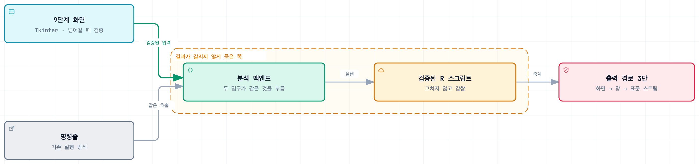

WGBS 유전체 분석 자동화 프로그램
유전체 분석 절차를 GUI로 묶은 프로그램
Impact
- 9단계명령줄 다단계 분석을 창 하나로 — Tkinter GUI
- 3단콘솔 없는 빌드에서 창이 뜨기 전에 죽던 문제를 세 단계 폴백으로 막음
Background
WGBS 분석 절차는 데이터 분석 전문가가 R로 작성한 여러 단계의 스크립트였습니다. 정작 이 분석을 돌려야 하는 사람은 프로그래밍을 하지 않는 연구자라서, 명령줄에서 도구를 오가며 단계마다 직접 실행해야 했고 하나라도 틀리면 끝까지 가서야 알게 됐습니다.
Architecture

Contributions
순서를 화면이 강제
Tkinter로 9단계 순차 진행 화면을 만들고 단계를 넘어갈 때 입력을 검증해서 실행 전에 오류를 걸러냈습니다. 잘못된 조합으로 몇 시간짜리 분석을 돌린 뒤에 실패를 아는 것이 가장 큰 비용이었습니다. 화면용과 명령줄용 코드를 따로 두면 같은 데이터에서 다른 결과가 나올 수 있어서, 두 진입점이 같은 분석 백엔드를 호출하게 했습니다.
검증된 코드는 고치지 않고 감싸기
이미 검증된 분석 코드는 콘솔에 진행 상황을 출력하도록 짜여 있었습니다. 수정하면 검증을 다시 해야 해서, 콘솔 출력을 코드 변경 없이 화면 로그로 중계하는 구조로 감싸고 오래 걸리는 연산은 백그라운드 스레드로 분리했습니다. R 실행 환경을 함께 담은 무설치 배포본으로 묶어서, 연구자가 받아서 바로 실행합니다.
Troubleshooting
창이 뜨기도 전에 죽는다
- 문제
- 콘솔 없이 뜨도록 빌드한 실행 파일이 시작하자마자 종료됐습니다. 오류 창도 뜨지 않아서 무엇이 잘못됐는지 알 수 없었습니다.
- 원인
- 콘솔이 없는 빌드에서는
sys.stdout이None이라, 진행 상황을 출력하는 코드가 화면이 만들어지기 전에 예외를 냈습니다. - 해결
- 출력 경로를 세 단계로 뒀습니다. 화면이 준비됐으면 화면 로그로, 아니면 Windows API로 창을 띄우고, 그것도 안 되면 표준 스트림으로 내려갑니다.
- 결과
- 어떤 단계에서 실패해도 사용자가 이유를 볼 수 있게 됐습니다.
화면을 고쳤더니 명령줄 쪽이 멈췄다
- 문제
- GUI를 수정한 뒤 콘솔로 실행하는 분석이 동작하지 않았습니다.
- 원인
- 두 진입점이 같은 백엔드를 부르게 만든 구조의 대가였습니다. 결과가 일치하는 대신 한쪽 수정이 다른 쪽으로 넘어갑니다.
- 해결
- 화면에서만 쓰는 상태를 백엔드에서 떼어내고, 고칠 때마다 두 경로를 모두 실행해 확인했습니다.
- 결과
- 구조를 되돌리지는 않았습니다. 결과가 갈리는 쪽이 더 위험하다고 봤습니다.